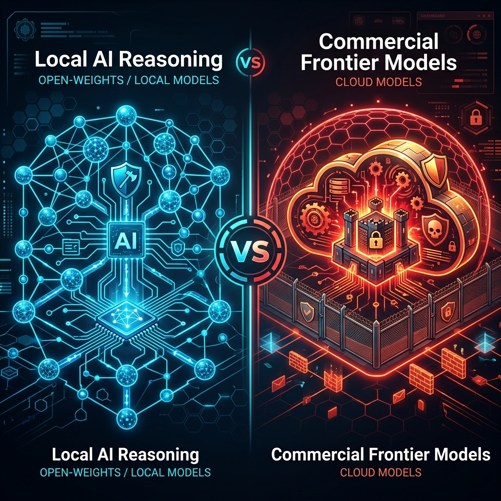

Reasoning Models vs. Frontier Models in Offensive Security Benchmarking

In offensive security, the race to build autonomous agents has triggered a significant debate: Should we rely on commercial frontier models (like OpenAI's o1/o3-mini or Anthropic's Claude 3.5 Sonnet), or should we pivot to self-hosted, local reasoning models (such as DeepSeek-R1, Qwen-2.5-Coder, or abliterated LLMs)?
Evaluating this is not just about raw coding capability; it requires looking at censorship, architectural integration, and how agent loops change the baseline of what is possible.
1. How Local Reasoning Models Hold Up Against Frontier Models
Historically, local open-weights models (like the early Llama 3 or Gemma 2 variants) were excellent at simple syntax-level tasks (such as drafting a basic exploit script or refactoring code), but they choked when faced with multi-step reasoning, pivoting across network topologies, or debugging an exploit payload when it triggered a web application firewall (WAF).
With the rise of distilled reasoning models (like DeepSeek-R1-Distill-Qwen-32B and DeepSeek-R1-Distill-Llama-70B), the dynamic has fundamentally changed:
- The "Frontier" Margin is Shrinking: Distilled reasoning models rival the logical capabilities of GPT-4o on raw code synthesis, reasoning steps, and mathematical deduction.
- The Refusal Bottleneck: The primary blocker for commercial frontier models in offensive security isn't intelligence; it's alignment. Commercial models are heavily filtered. When asked to evaluate an actual IDOR chain, interact with an exploit container, or compile a raw payload, they trigger safety refusals 90% of the time. This makes them highly impractical for automated red teaming.
- The Local Advantage: Uncensored, abliterated local models (such as
Gemma-4-26B-Abliteratedor custom quantized Qwen/DeepSeek weights) operate without filters. Because they don't refuse, they can objectively evaluate security weaknesses, think through payload debugging, and carry out execution loops without safety disruptions.
2. From Prompts to Agent Frameworks: The True Hacking Loop
Offensive operations are rarely static. A simple system prompt like "You are a red-team expert" will fail in a real scenario because hacking is a tight, stateful feedback loop:
$$\text{Action} \rightarrow \text{Observe Output} \rightarrow \text{Analyze Failure} \rightarrow \text{Refine Payload} \rightarrow \text{Repeat}$$
A raw model cannot interact with a terminal, manage state, or run network scans. This is where Agentic Orchestration becomes necessary. Inside an agent framework, the model acts as the brain, while the framework acts as its hands:
- Reasoning Step: The model analyzes a port scan inside its
<think>block and plans to test for SQL injection. - Action execution: The framework executes
sqlmapor a custom python harness against the target. - Feedback Parser: The framework captures stdout, parses database errors, and feeds the output back into the model's context window.
- Correction Step: The model recognizes a syntax error or firewall rule, adjusts the SQL query syntax, and triggers the next iteration.
By offloading execution mechanics to the framework and reasoning to the LLM, the model can iteratively work around technical barriers just like a human operator.
3. Leading Frameworks for Offensive Benchmarking & Execution
To evaluate how these models perform under fire, we use three primary benchmarking and emulation platforms:
A. Swarm-AI (Continuous Penetration Testing)
Swarm-AI is a distributed, agentic orchestration engine designed to scale offensive checks.
- Decoupled Architecture: It uses a central intelligence coordinator to distribute micro-tasks (OWASP tests, credential stuffing, etc.) to lightweight, ephemeral workers.
- Model Benchmarking: We can connect local reasoning models running via Ollama or vLLM to the Swarm-AI coordinator. This allows us to benchmark how efficiently different models choose, adapt, and run payloads for specific MITRE ATT&CK techniques or OWASP Top 10 vulnerabilities.
B. Hexstrike & Cyber Auto Agents
These agents focus on simulating human console interactions:
- Interactive Shell Access: They run loops where the agent interacts directly with terminal tools, Metasploit, or interactive debuggers.
- ReAct Flow: Ideal for measuring how well a model handles complex error logs, shell timeouts, and unexpected host behavior.
C. MITRE CALDERA Emulation & ATT&CK Benchmarks
For quantitative verification, running AI agents against mock targets inside a MITRE CALDERA adversary emulation harness provides a reproducible score. By measuring the percentage of ATT&CK-mapped phases the agent successfully executes versus those blocked by safety refusals or logic loops, we get a clear baseline comparing OSS reasoning models against commercial frontier models.
4. Outcome-Based Benchmarking: The Tools That Get Smarter Will Win
When evaluating agent frameworks, we must pivot from static code verification to outcome-based benchmarking.
Traditional software testing looks at results: did a script run without throwing an error, or did a specific regex find a string in stdout? In a real deployment, this is a shallow metric. An offensive agent must be benchmarked on system state change and objective success:
- Did it achieve the designated credential access or lateral movement goal?
- Did it identify firewall filtering and dynamically re-encode its payload?
- Did it gracefully recover when an expected interactive shell terminated?
Tools that simply run pre-packaged commands are easily blocked by modern EDR and firewalls. The agents that succeed are those that get smarter dynamically, using internal reasoning paths to debug compiled C exploits, adapt network scanning speeds, and rewrite obfuscated payloads based on live environment feedback. The future of autonomous testing belongs to architectures that learn from failure on-the-fly.
5. NextGenPVE Lab Integration: Bypassing the Cloud
This is exactly why we kicked off our local hardware acceleration research. To build a truly private, air-gapped threat emulation environment, we had to decouple our benchmarking loops from commercial cloud providers.
By leveraging NextGenPVE (our localized Proxmox virtualization lab), we can orchestrate entire target environments and attack clusters on-premise. This setup allows us to run local LLMs directly next to the target subnets. Specifically, we've integrated:
- Edge NPUs (Axera AX8850): Used as dedicated, ultra-low-power sanity-check inference nodes running quantized 1.7B and 2B reasoning models natively under C++ servers in LXC containers.
- NVIDIA RTX Ada Generation GPUs (such as the RTX 2000 Ada): Serving as our main heavy-lifting infrastructure, running larger 14B and 32B distilled reasoning models (like
DeepSeek-R1-Distill-Qwen) with full context windows.
This local hardware stack ensures that our autonomous agent loops can run thousands of iterative, high-speed test cycles against MITRE CALDERA targets without API latency, data leakage, or subscription costs.
[!NOTE] NPU Model Selection: To optimize the 7GB Continuous Memory (CMM) limits of the Axera AX8850, we rely on tiny 1.5B to 4B Qwen-based models (such as
Qwen2.5-1.5B-InstructandQwen2.5-Coder-3Bvariants). These compact models run natively on the NPU tiler, delivering incredibly low latency for quick checks while preserving the main RTX GPU resources for our larger distilled reasoning models.
What's Next?
In our upcoming labs, we are testing how well our local NextGenPVE cluster handles autonomous loops. We will be analyzing how DeepSeek-R1-Distill-Qwen:14B and Gemma-4-26B-Abliterated handle an interactive ReAct environment when tasked with finding and exploiting a vulnerability in a secure container.